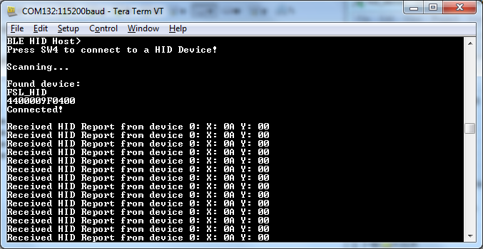
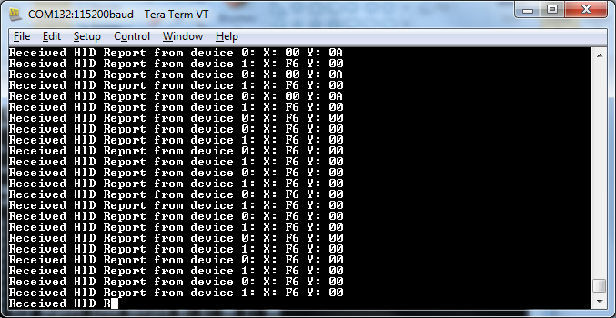

The application is built to work only with the HID Device application presented in the previous subchapter and it supports up to 2 peripherals connected at the same time.
- Open a serial port terminal and connect it to board, in the same manner described in section 5.1.3. The start screen is displayed after the board is reset.
- Press the SW4 button on the HID Host board to start scanning for devices. Do the same on the HID
device board to make it enter discoverable mode. The host connects with the board after it
sees it advertise the HID service, connects to it, and configures report notifications. The
device then starts sending HID reports, as shown below.
Figure 1. Tera Term – Output Console on HID Host with 1 peripheral connected

- To connect a second HID device, press again the SW4 button on the HID Host board to start scanning for devices. Do the same on the second HID device board to make it enter discoverable mode.
The host connects with the board after it sees it advertise the HID service, connects to it, and configures report notifications. The device then starts sending HID reports.
The console will print reports from both devices, as shown below.
Figure 2. Tera Term – Output Console on HID Host with 2 peripherals connected
